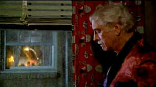
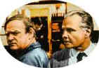

| Atlantic City/ A, B+ |
| Paramount/1981/103/ANA 1.85 |
The girl singers croon "On the boardwalk in
Atlantic City." The glitz and decay vie for space. French director
Louis Malle's vision captured in Atlantic City is stunning and
perceptive. The theme of the old giving way for the new is executed to
perfection. Yet, there's affection and respect for the past. One of the
truly great elements of Atlantic City is that it has a unique
voice. I don't recall ever seeing anything quite like Atlantic City,
except perhaps a film played for broad satire, which is not the case here.
There's a lot of very sharp, biting humor in Atlantic
City, but it is derived from the characters and their situations.
There are no snappy one-liners, but the humor evolves organically.
Grinding it out against the new boardwalk glitter is a gritty drug tale
that introduces a set of splendidly realized characters. Lou Pasco is
silver-haired small time hood hanging onto the past by Grace's
fingernails. Grace, a former beauty queen and the wife of a diceased
gangster, primps and complains in her bed with a small dog in her arms as
Lou answers her insistent calls. Lou takes care of Grace. Across the
courtyard from Lou, Sally's window beckons lasciviously. Sally
splits open clams at the Resorts Casino and is studying to be a
dealer. When Sally's little sister shows up Atlantic City
lights up for these character like a fourth of July fireworks show.
John Guare's very sophisticated Atlantic City
gives director Malle great raw material to bring to life. It
brilliantly sets up the chief elements of the plot with little waste.
There are such a complex mix of characters, yet they all have their own
voice. It's a tribute to the script and the brilliant direction of Louis
Malle. Every element of the film is set up in the first three or four
minutes without seeming forced. Think of the little throw away line from
Sally as she exclaims "No fish." It's wonderful.
 |
|
Lemon nights. ©Paramount
|
Burt Lancaster is nothing short of magnificent in Atlantic
City. What a fantastic late career performance opportunity. It's one
of the actor's best roles and its his fifth decade of lighting up the
silver screen. Lancaster's grace and elegance have a tinge of forced
preening perfectly suiting Lou. Malle's casting is inspirational.
Kate Reid, playing Grace, pairs perfectly with Lancaster. The byplay
between the two is awesome. Grace may be a caricature but she is closer to
reality than cartoon. It's her unique reality. The young Susan Sarandon is
quite a striking Sally. Her natural sexiness lit by an interior fire with
lots of character strength. The strong supporting cast includes
French sophisticate Michel Piccoli as the casino man training dealers. He
adds a layer of sophistication to the world of Atlantic City.
Malle's instincts are unfailing in Atlantic
City. He knows where to place the camera, when to come in close on
characters, what details illuminate the script for greatest power and
effect. The lemon bathing scene is an instant classic. Absolutely. It's
sensual, and so sly in the way Malle depicts Lou watching with still
breath from his darkened apartment. There's one sensitive, tender sensual
scene between Lou and Sally. The scene is even poetic. It reminds me a bit
of Bernstein's elegiac remembrance of the girl in the white dress in Citizen
Kane. Lancaster and Sarandon make you believe in the moment.
Malle finds a perfectly luxurious pacing for Atlantic City. The pacing is
much like the lemon scene, like the movements of the lemons across Sally's
flesh, graceful, sensuous, patient.
Malle rolled a string of sevens with all his decisions
for Atlantic City. Michel Legrand's score and Malle's choice of in
situ music, like Bellini's Norma, is shimmering. The trio singing Atlantic
City or Robert Goulet's crooning at the hospital, the music evokes the
time and place and the past as well. Even Lou's choice of jazz fits the
character like a custom tailored suit. And kudos to the location scout who
selected the car elevators for a short, thrilling, technically masterful
chase scene. Could it have be written that way in the script?
Don't fail to visit Atlantic City through
this glorious film!
Atlantic City is no seedy DVD. It
sprightly and sharp and alive. Some of the long lens work is extremely
grainy, but it seldom evident. Very full color saturation adds excitement.
Black levels are excellent. Black on black detail is perfect. The raw bar
scenes at the Casino are breathtakingly beautiful. Sharp detailing,
perfect color, bright with theatrical contrast. How about the detail on
Joseph's overcoat: perfectly stable and intricately revealing. Check out
the fruit basket in Sally's apartment. You might as well be picking
it out at the super market. Colors are incredibly accurate. The yellows in
the construction equipment are perfect. The flower shop is an
explosion of color. Interior shots are simply lovely. Range of skin
tones is outstanding and natural. Fine light output and contrast balance.
Good depth in the detail. The Dolby Digital 2.0 mono sound is clean and
open and captures the feeling of place. |
|
|
|
General, The /A,B+

Irish gang leader Martin Cahill through the lens of John Boorman makes
fascinating viewing. Watch it in black and white, Boorman's choice.

The Movie Poster Archive
include extensive poster images from the films of stars like Susan
Hayward, Kirk Douglas, Katharine Hepburn and many more. Our featured
star is Burt Lancaster.

Selections from the Feature
Archive include articles on Akira Kurosawa, Blonde Bimbos, Frank Darabont, Steven Culp, John Herzfeld or Vietnam: The Hollywood Pariah, and many
more....
Hitchcock on DVD

Information and review links to Alfred Hitchcock on DVD
 
ISF Monitor
Calibrations in the Tristate New York area. Lots of hardware
info and frequent hardware peaks from video expert Kevin Miller. They may
be judgmental, but that's the point, isn't it. Lots of DVD reviews plus
news and more.
DVD reviews for women
from a woman's point of view
Mystery writer Fred Hunter digs into classic films on DVD. Check out his
insightful reviews at The Classics on DVD.

The Cinema Laser
A home grown magazine for laserphiles that has been publishing for a
number of years and has embraced DVD in a big way. Lots of helpful
information.

News, information, features about current films in theaters and in the
pipeline. Easy to use interface.
 Have you visited Home Theater Talk
lately? One of the friendliest places on the Net for Home Theater and DVD
discussion, you can get help for installation problems or simply share
your opinions with other Vidiots. Have you visited Home Theater Talk
lately? One of the friendliest places on the Net for Home Theater and DVD
discussion, you can get help for installation problems or simply share
your opinions with other Vidiots.
|